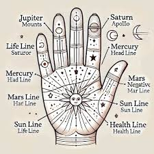

ลายมือ

ศาสตร์การทำนายดวงชะตาและวิเคราะห์บุคลิกลักษณะของบุคคลโดยอาศัยการอ่านเส้น ลวดลาย รูปร่าง และลักษณะของฝ่ามือรวมถึงนิ้วมือ ซึ่งเป็นวิชาโบราณที่มีประวัติศาสตร์ยาวนานในหลายวัฒนธรรมทั่วโลกทั้งอินเดีย จีน และยุโรป โดยหลักการของการดูดวงลายมือจะแบ่งออกเป็น 2 ส่วนหลัก คือ โครงสร้างมือ (Chirognomy) ซึ่งพิจารณาจากรูปร่างของฝ่ามือ ความยาวของนิ้ว ลักษณะเนื้อ และเนินต่างๆ บนฝ่ามือ เพื่อบอกถึงอุปนิสัยพื้นฐาน พลังงาน และศักยภาพที่ติดตัวมาแต่กำเนิด และ เส้นบนฝ่ามือ (Chiromancy) ซึ่งพิจารณาจากเส้นหลักและเส้นย่อยต่างๆ ที่ปรากฏบนฝ่ามือ โดยเส้นหลักสำคัญที่ใช้ในการวิเคราะห์ประกอบด้วย 3 เส้น คือ เส้นหัวใจ (Heart Line) สะท้อนถึงเรื่องอารมณ์ ความรู้สึก ความรัก และสุขภาพหัวใจ เส้นสมอง (Head Line) สะท้อนถึงความคิด สติปัญญา การตัดสินใจ และระบบประสาท และ เส้นชีวิต (Life Line) สะท้อนถึงพลังชีวิต ความแข็งแรงของร่างกาย เหตุการณ์สำคัญ และเปลี่ยนแปลงในชีวิต นอกจากนี้ยังมีเส้นรองอื่นๆ เช่น เส้นโชคลาภหรือเส้นการงาน (Fate Line) และเส้นอาทิตย์ (Sun Line) ที่ช่วยบอกถึงความสำเร็จและชื่อเสียง โดยความน่าสนใจของการดูดวงลายมือคือเส้นบนฝ่ามือสามารถเปลี่ยนแปลงได้ตามพฤติกรรม สภาพจิตใจ และการดำเนินชีวิตของบุคคลนั้นๆ การดูดวงลายมือจึงไม่ได้เป็นเพียงการทำนายอนาคตที่ตายตัว แต่เป็นเครื่องมือช่วยให้เราเข้าใจจุดแข็ง จุดอ่อน สภาวะอารมณ์ และแนวโน้มชีวิตเพื่อนำมาปรับใช้ในการพัฒนาตนเองอย่างมีสติ